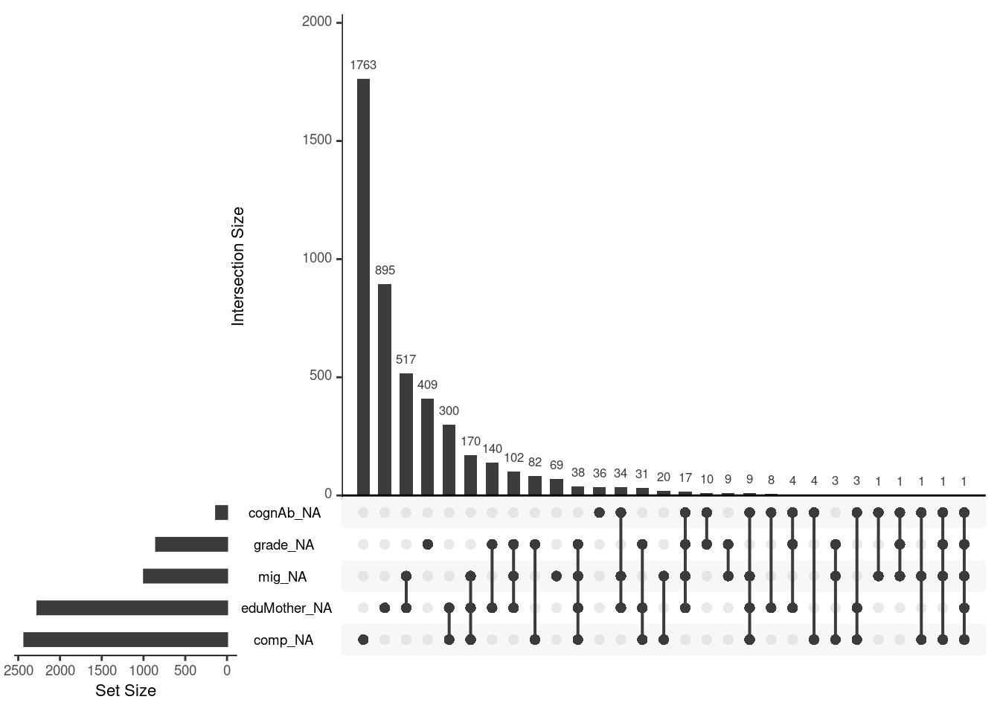

Van Buuren, S. (2018). Flexible imputation of missing data. CRC press.Online Version
4.1 Load libraries
4.2 Basics
Split Questionnaire Designs (SQDs) randomly assign respondents to different fractions of the full questionnaire (modules) and, subsequently, impute the data that are missing by design
key question: Why is the data missing?
by design
non-response
in panel: wave non-response
sometimes information can be imputed from the last wave like the university degree or the biological birth age, sex → last observational carried forward
4.2.1 Missing data mechanisms
1. Missing completely at random (MCAR): Missingness probability independent of observed & unobserved variable values \(Y\)\(f (R | Y ) = f (R)\) (with Y studied variables, R missing data indicator) → wie can deal easy with
2. Missing at random (MAR): Conditioned on observed variable values \(Y_{obs}\) , missingness probability is independent of unobserved variable values \(Y_{mis}\)\(f (R | Y ) = f (R |Y_{obs})\) → we can control for e.g. the interviewer we can control for
3. Missing not at random (MNAR, i.e. not ignorable): Missingness mechanism is neither MCAR nor MAR \(f (R | Y ) = f (R | Y_{obs},Y_{mis})\) i.e. the rich often don’t report their income or their wealth, so data is not missing at random → this is really problem and complicated to solve → topic of this class today
4.2.2 Littles test for MCAR
Literature: Little, R. J. (1988). A test of missing completely at random for multivariate data with missing values. Journal of the American statistical Association, 83(404), 1198-1202.
Tests the null hypothesis that the missing data is MCAR
The idea is that conditional on the missing indicator \(r_i\), the means of the observed \(y\)s are expected to vary across different patterns, if the missingness mechanism is MAR.
\(H_0\): missingness mechanism is MCAR, \(H1\): missingness mechanism is not MCAR
p-value \(< 0.05\): missing data mechanism is not MCAR
Note: Implemented in the R package ‘naniar’, function mcar_test. AND: takes a little while, be patient.
4.2.3 Exercise
Load data:
DAT <-read_dta("data/3.Example1.dta")summary(DAT)
id grade sex comp
Min. : 9 Min. :1.000 Min. :0.0000 Min. :-6.7697
1st Qu.: 9326 1st Qu.:2.000 1st Qu.:0.0000 1st Qu.:-0.7458
Median :18734 Median :3.000 Median :0.0000 Median :-0.0180
Mean :18442 Mean :2.956 Mean :0.4952 Mean :-0.0607
3rd Qu.:27580 3rd Qu.:4.000 3rd Qu.:1.0000 3rd Qu.: 0.6776
Max. :36380 Max. :6.000 Max. :1.0000 Max. : 4.8601
NA's :848 NA's :2426
eduMother age mig specialNeeds
Min. :0.0000 Min. :13.58 Min. :0.00 Min. :0.00000
1st Qu.:0.0000 1st Qu.:15.08 1st Qu.:0.00 1st Qu.:0.00000
Median :0.0000 Median :15.42 Median :0.00 Median :0.00000
Mean :0.2272 Mean :15.47 Mean :0.16 Mean :0.02661
3rd Qu.:0.0000 3rd Qu.:15.75 3rd Qu.:0.00 3rd Qu.:0.00000
Max. :1.0000 Max. :20.08 Max. :1.00 Max. :1.00000
NA's :2269 NA's :993 NA's :8
cognAb GY
Min. :-5.70067 Min. :0.0000
1st Qu.:-0.99414 1st Qu.:0.0000
Median :-0.22912 Median :0.0000
Mean :-0.06858 Mean :0.4203
3rd Qu.: 0.85708 3rd Qu.:1.0000
Max. : 3.98392 Max. :1.0000
NA's :130
Data:
Data on 9th grade school children from Germany (N=10,531); file: “ex3 1Level.dta”
Variables: id id of pupil, sex (0 male, 1 female), age, GY (1 Gymnasium, 0 other), specialNeeds (0 no, 1 yes), cognAb (measure of cogn. abilities), grade (grade in GERM), mig (German native speaker, 0 no, 1 yes), eduMother (mother’s educational attainment, 1 university degree, 0 other), comp (orthography competence)
With a first look in the data with summary we can see, that the amount of missing data differs a lot for different variables.
Have a look at the missingness pattern and find the proportion of missing values in each variable. Use the table command for this purpose, with the argument exclude=NULL Use the is.na” (or “!is.na”) function. Use the md.pattern function from the mice package.
table(is.na.data.frame(DAT), exclude =NULL)
FALSE TRUE
98636 6674
Overall, there are 6674 missing data points in the data set.
missP <-md.pattern(DAT, plot=F)#Last rows of the table divided by the data to get an insight of percentages:round(missP[nrow(missP),]/nrow(DAT)*100,2)
id sex age GY specialNeeds cognAb
0.00 0.00 0.00 0.00 0.08 1.23
grade mig eduMother comp
8.05 9.43 21.55 23.04 63.37
While the ID is not missing at all (and what would not make sense to expect missings here) there are high missing rates in mother’s educational attainment (21.55 %) and orthography competence (23.04 %).
For all variables with a missingness less than 5 % the data can be used without thinking twice. 5 % is a rule of thumb. If you do it right, you can also use variables with a missing rate about 60 %, but be sure about that the estimates are quite uncertain. Recommended: not more than 40 %.
Looking not at single variables, but at complete cases:
table(complete.cases(DAT))/nrow(DAT)
FALSE TRUE
0.4442123 0.5557877
Only about 55 % of pupils have completed all questions in the questionnaire.
Visualize the missingness pattern using the following functions of the R package naniar (here “DAT” is the whole data set): “vis miss(DAT)” and gg miss upset(DAT) (See also https://cran.r-project.org/web/packages/naniar/vignettes/naniar-visualisation.html)
vis_miss(DAT)
In this graph we can see the missings per variable. The The black lines show the missingness for each observation per variable. More black lines indicate more missings.
A better tool for visualisation is this:
linked_miss <-gg_miss_upset(DAT)linked_miss

The absolute numbers of missings is depicted is in the graphs itself and we can see linked missingness.
The missings in a certain variable is linked to a bar, that indicates the absolute number of missings.
The connected dots shows, that the absolute number indiciated by the bar is missing in both variables.
or in other words: The set size indicates how many NA is missing per variable. The intersection size show how many NA is missing in one variable and at least another.
The bars are ordered from the highest amount of missingness to the lowest.
Describe & interpret the resulting graphs.
Plot 1:
overall 6.3% of the data is missing.
the graph corresponds to the missing pattern in Section 4.2.3, there are a lot missings in comp and eduMother.
Plot 2 gives more information that plot 1:
most cases missing in the competence, then in mothers education, then in migration, then in grade and then in cognitive ability
for example we can see there is one case, in which five variables are missing → this case should be excluded from analysis. Because if cases have missings in all main variables of interest, you should exclude these cases.
we can also see, there is a high number in missings for orthography competence and that there is a high missingsness for orthography competence AND mothers education in combination.
There is a high combination in the missingness for migration and mothers education. In all cases, where the question of migration is not answered, the question of mothers education is not answered, too.→ this is a strong inticator, that MCAR is not true and there are systematic missings.
Test whether the missingness pattern indicates MCAR.
# test with Little's missing completely at random test (MCAR)mcar_test(DAT)
The p-value is so small, that MCAR must be rejected. There is no indicator, that the missings differ randomly. We must reject \(H_0\). Looking at the plot before, that is not suprisingly at all.
The Little Test split the data into groups and looks for patterns of missings in this groups. We have 10.000 rows in the data sets. You make different subsets of the sample and compute the mean of the variables. Then the means are compared in different groups. If it is random, the average of the average is always the same, because the holes are random. → if the holes are random, the holes don’t play a role in average computations and we should get the same values.
4.3 General ways to deal with missing data
Ignore it:
listwise deletion, complete case analysis
partly ok if MCAR, however, reduction in statistical power
rule of thumb: if percentage of missing data \(< 5%\) statistical uncertainty due to sampling and (parameter) estimation larger than gain when modeling / imputing missing data
exception: if one has a special interest in the missingness process, e.g. why do less than 5% not participate in a study
Model or impute it:
necessary for MAR and MNAR, otherwise biased estimated might result
often in case of income: income is often not missing randomly. Aggregate level data of income differs from surveys on individual level → data for people with a wealth above 2 million are missing often in survey. On the side of the lower income we often have income levels around 399 Euro because of the tax benchmark of 400 Euro. People at lower level often respond in surveys because of the incentives.
MNAR is problematic since the missingness probability depends in the missingness itself (often the case with income data)
One way of dealing with missing data, but meanwhile the most used one.
There are many way of “imputing” missing values: hot deck imputation, mean imputation, regression imputation (impute by estimators of regression model)
To account for the variability induced by imputing missing values: impute missing values several times by making random draws from multivariate distributions
data is incomplete, fill with imputed data from a data set with predictive power, depends on the distribution of the data set you fill the holes and account for the uncertainty with random imputations from multivariate distributions. Then you analyse the data and pooled the results.
Multiple Imputation
you need 20 or 30 data sets with different distributions for robust estimators
These multivariate distributions have to be informative for the missingness mechanism at hand
Note: More data does not help more; data without any predictive power for the missingness mechanism just unnecessarily increases the variability between the imputed values
4.4.1 Rubin’s Combing Rules
We pool the data with Rubin´s Rules (RR)
are designed to pool parameter estimates, such as mean differences, regression coefficients, standard errors and to derive confidence intervals and p-values.
When RR are used, it is assumed that the repeated parameter estimates are normally distributed. This cannot be assumed for all statistical test statistics, e.g. correlation coefficients. (For these test statistics, transformations are first performed before RR can be applied.) → Bayesian idea: if you estimate a parameter, Rubin assumes the parameter is a random value (not fixed), because it has a standard error. From this random distribution for the parameters you can compute a pooled parameter estimate.
The pooled parameter estimate \(\overlineθ\) is computed as follows, it is the mean of the estimates:
\[
\overlineθ = \frac{1}{m}\sum^m_{i=1}θ_i
\]
with \(m\) is the number of imputed datasets, \(θ_i\) is the sum of the parameter estimate (i.e. mean difference) using the \(ith\) imputed dataset.
The pooled standard error is derived from different components that reflect the within (the sampling variance of the mean within a data set for each data set, measured by the standard error) and between (the sampling variance of a parameter \(X\) between the different data sets) sampling variance of the mean difference in the multiple imputed datasets.
Within imputation variance:
average of the mean of the within variance estimate, i.e. squared standard error, in each imputed dataset
\[
V_w= \frac{1}{m}\sum^m_{i=1}SE^2_i
\]
With \(SE^2_i\) is the sum of the squared standard error (SE), estimated in each imputed data set \(i\) * reflects the sampling variance, i.e. the precision of the parameter of interest in each completed dataset
will be large in small samples and small in large samples
Between imputation variance:
Variance due to imputing missing data
estimated by taking the variance of the parameter of interest estimated over imputed datasets
This formula is equal to the formula for the (sample) variance which is commonly used in statistics.
This value is large when the level of missing data is high and smaller when the level of missing data is small
For significance testing a univariate Wald test is used, see van Buuren (2018) The derivation of the degrees of freedom for testing, how to get p-values, and confidence intervals is described in very detail in as well
4.5 Issues in multivariate imputation
Most imputation models for \(Y_j\) (the missing data point in the variable j) use the remaining columns \(Y_{-j}\) (the values from the other variables that are not missing) as predictors
it builds on the idea of MAR: The probability that an observation is missing may depend on \(Y_{obs}\) but not on \(Y_{mis}\), so the probability that \(Y_j\) is missing for an individual may be related to the values of variables \(Y_h, Y_k,\dots\)
The rationale is that conditioning on \(Y_{-j}\) preserves the relations among the \(Y_j\)\(Y_j\) in the imputed data
Practical problems that can occur in multivariate missing data
The predictors \(Y_{-j}\) themselves can contain missing values, so if competence is the \(Y\), maybe although the missings for competence are exluded to impute the others, there are still missings in mothers education
“Circular” dependence can occur, where \(Y^{mis}_j\) depends on \(Y^{mis}_h\) , and \(Y^{mis}_h\) depends \(Y^{mis}_j\) with \(h \not= j\) , because in general \(Y_j\) and \(Y_h\) are correlated (even given other variables)
Variables are of different types (e.g., binary, unordered, ordered, continuous); application of theoretically convenient models (multivariate normal) theoretically inappropriate
most models are based on normal distribution but in fact in the actual worlds is not true
Especially with large proportion of missingness and small sample size, collinearity or empty cells can occur
The ordering of the rows and columns can be meaningful, e.g., as in longitudinal data
The relation between \(Y_j\) and predictors \(Y_{−j}\) can be complex (non-linear, subject to censoring, etc.) Imputation can create impossible combinations, such as pregnant fathers
→ ALL that problems can be coped with! mice can handle it (:
4.5.1 Congeniality
Congeniality: Relation between the imputation model and the analysis model
Imputation model should be more general than the substantive model, i.e., analysis procedure should be congenial to the imputation model
Least condition: all variables of the analysis model have to be part of the imputation model → imputation model can be larger, but not the other way around.
Non-congeniality may lead to biased parameter estimates of the analysis model
4.6 Single level imputation of MAR data
4.6.1 Joint Modelling (JM)
– Everything is included in one step. Skipped, because not often used nowadays –
General idea: - Assumes ignorability: applicable under MCAR or MAR JM starts from the assumption that the data can be described by a multivariate distribution - Imputations are created as draws from the fitted distribution - The model can be based on any multivariate distribution - The multivariate normal distribution is most widely applied - Further details: e.g. Schafer, J. L. 1997. Analysis of Incomplete Multivariate Data. London: Chapman & Hall
4.7 Fully Conditional Specification (FCS)
FCS imputes multivariate missing data on a variable-by-variable basis → step-wise & Specification of an imputation model for each incomplete variable required; creation of imputations per variable in an iterative fashion
i.e. for income a ln model, because income is distributed logarithmic normally → ln income is a ln income model of the variables of the income in the data set. Consequently, you need a good prediction model that is feasible, that you can use as an imputation model
FCS specifies the multivariate distribution \(P(Y ,X, R | θ)\) through a set of conditional densities \(P(Y_j | X,Y_j , R, ϕ_j )\) (I identify Y_j by another variable X, accounting for the missingness with the last \(ϕ_j\), the parameters in the prediction model)
This conditional density is used to impute \(Y_j\) given \(X,Y−j\) and \(R\)
Starting from simple random draws from the marginal distribution, imputation under FCS is done by iterating over the conditionally specified imputation models FCS directly specifies the conditional distributions from which draws should be made → bypasses the need to specify a multivariate model for the data (as needed in JM)
MICE Algorithm
The MICE algorithm is a Markov chain Monte Carlo (MCMC) method, where the state space is the collection of all imputed values
More specifically, (if conditionals are compatible) the MICE algorithm is a Gibbs sampler: a Bayesian simulation technique that samples from the conditional distributions in order to obtain samples from the joint distribution
Mind: in the MICE algorithm, the conditional distributions are under direct control of the imputer: the joint distribution only implicitly known & may not exist
From theoretical view point: not as good (we do not know to which the algo converges), in practice: algo works very well (shown by a multitude of simulations) + a testical toolbox is missing, only graphical tests are available at the moment
Diagnostics of imputations are necessary (e.g. having a look at the trace plots produced by the sampler)
4.7.1 Compatibility
Two conditional densities \(p(Y1 | Y2)\) (income depending on age) and \(p(Y1 | Y2)\) (age depending on income) are compatible if a joint distribution, p(Y1,Y2) exists that has \(p(Y1 | Y2)\) and \(p(Y1 | Y2)\) as its conditional densities
PROBLEM: this is not always clear, i.e. pregnancy and gender → then the algorithm gives not feasible results
Can the imputed data be trusted when we cannot find such a joint distribution? Incompatibility easily arises if deterministic functions of the data are imputed along with their originals, especially the case for interaction terms, quadratic terms
Such terms introduce feedback loops and impossible combinations into the system, which can invalidate the imputations
Simulation studies: imputations robust against violations of compatibility, as long as each conditional model is correctly specified
i.e. if you are interested in pregnancy, you make one model for men and another for women, only women are included in the imputation model
“Logreg”, “polyreg” and “polr” tend to preserve the main effects well provided that the parameters are identified and can be reasonably well estimated - Often: the ratio of the number of fitted parameters relative to the number of events easily drops below 10 → use more robust methods, like predictive mean matching or classification and regression trees (CART)
In the following: Two methods explained, that doing well in practice!
4.7.2.1 Predictive Mean Matching (PMM), Algorithm
pmm in library(mice) → very robust, often put in
PMM calculates the predicted value of target variable Y according to the specified imputation model
For each missing entry: PMM uses a set of candidate donors (3, 5 (the default number of donors), 10) from all complete cases that have predicted values closest to the predicted value for the missing entry
from the complete cases I can compute a regression line. The donors are the complete/ observed cases, that donor their distance from the regression line for the computation of the value of the missing cell
One donor is randomly drawn from the candidates, and the observed value of the donor is taken to replace the missing value The assumption is the distribution of the missing cell is the same as the observed data of the candidate donors → the missing cells are also part of the predicted regression line
PMM works best with large samples
PMM is fairly robust to transformations of the target variable (e.g. imputing \(log(Y)\) yields similar results to imputing \(expY\)) Less vulnerable to model misspecification (e.g. mostly linear model is not in context of imputation)
because imputation is based on the donors, if the donors (mis-)specificate the imputed values will does the same.
Description of the algorithm:
Adapted from https://statisticalhorizons.com/predictive-mean-matching
Suppose there is a single variable \(Y\) that has some cases with missing data, and a set of variables \(X\) (with no missing data) that are used to impute \(Y\).
For cases with no missing data, estimate a linear regression of Y on X, producing a set of coefficients b
Make a random draw from the posterior predictive distribution of \(b\), producing a new set of coefficients \(b⋆\). (Typically this is a random draw from a multivariate normal distribution with mean \(b\) and the estimated covariance matrix of \(b\) (with an additional random draw for the residual variance). This step is necessary to produce sufficient variability in the imputed values, and is common to all proper methods for multiple imputation.)
Using \(b⋆\), generate predicted values for \(Y\) for all cases, both those with data missing on \(Y\) and those with data present.
For each case with missing \(Y\), identify a set of cases with observed \(Y\) whose predicted values are close to the predicted value for the case with missing data.
From among those close cases, randomly choose one and assign its observed value to substitute for the missing value.
Repeat steps 2 through 5 for each completed data set.
Note: Here, linear regression is just used to construct a metric for matching cases with missing data to similar cases with data observed.
Caution: SPSS and Stata (here it is called ICE), have implemented PMM with a default setting of only one donor that actually, invalidates the method
Pitfalls - There’s no mathematical theory to justify it (only simulations) - Danger of the duplication of the same donor value many times: - Problem more likely to occur if the sample is small, or if there are many more missing data than observed data in a particular region of the predicted value (likely under high proportion of missing values) - Method does not work for a small number of predictors (e.g. Heitjan and Little 1991 for two predictors only) - May be inadequate in the presence of strong nonlinear relations (i.e. if imputation model is strongly misspecified) → Any terms appearing in the complete-data model need to be accounted for in the imputation model (mind: congeniality is necessary)
4.7.2.2 Classification and Regression Trees (CART)
Not only a method for imputation, but also for modelling & predicting, method for random forests
cart method in mice package in R or approaches using random forests are also available, idea is similar (rf)
The name CART is from the 80s, nowadays known under the name Classification and Regression Trees
CART (Breiman et al. 1984) are a popular class of machine learning algorithms
CART models seek predictors and cut points in the predictors that are used to split the sample
The cut points divide the sample into more homogeneous subsamples
The splitting process is repeated on both subsamples, so that a series of splits defines a binary tree
Regression trees
you identify different groups of data points in form of random nodes
now we not use donors, we use the random nodes to impute the missing data points → Approach:
Traverse the tree and find the appropriate terminal node
Form the donor group of all observed cases at the terminal node
Randomly draw a case from the donor group, and take its reported value as the imputed value
The idea is identical to PMM, where the “predictive mean” is now calculated by a tree model instead of a regression model
Properties
CART is robust against outliers, can deal with multicollinearity and skewed distributions, and are flexible enough to fit interactions and nonlinear relations
many aspects of model fitting have been automated, so there is “little tuning needed by the imputer” (Burgette and Reiter 2010)
4.7.3 Exercise
We want to find out the grade by the orthography competence, the sex and mothers education → Analysis Model:
cc <-lm(grade ~ comp + sex + eduMother, data=DAT)summary(cc)
Call:
lm(formula = grade ~ comp + sex + eduMother, data = DAT)
Residuals:
Min 1Q Median 3Q Max
-3.10780 -0.55174 -0.00511 0.52484 2.82866
Coefficients:
Estimate Std. Error t value Pr(>|t|)
(Intercept) 3.08966 0.01582 195.28 < 2e-16 ***
comp -0.30627 0.01034 -29.63 < 2e-16 ***
sex -0.28604 0.02111 -13.55 < 2e-16 ***
eduMother -0.12222 0.02459 -4.97 6.88e-07 ***
---
Signif. codes: 0 '***' 0.001 '**' 0.01 '*' 0.05 '.' 0.1 ' ' 1
Residual standard error: 0.7905 on 5955 degrees of freedom
(4572 observations deleted due to missingness)
Multiple R-squared: 0.1935, Adjusted R-squared: 0.1931
F-statistic: 476.2 on 3 and 5955 DF, p-value: < 2.2e-16
This model is a complete case analysis. All data available in the data set is used. Though, there are a lot missings in the explanatory variables as we have investigated in Section 4.2.3
Have a look at your imputed data sets using the command complete: Setting action to 1 we can have a look in the first imputed data set. Overall, we have imputed 5 data sets.
Which imputation techniques have been used (imp$method). Do you think the default settings fit the data? Try some other reasonable imputation techniques.
#access the method used for each variable in the data setmeth <- imp$methodmeth
id grade sex comp eduMother age
"" "pmm" "" "pmm" "pmm" ""
mig specialNeeds cognAb GY
"pmm" "pmm" "pmm" ""
Because there is no missing data points in id, GY, sex and age, no method is reported. For all the other variables pmm is used.
eduMother is a binary and has a lot missings, consequently we go with a more robust method and switch to cart.
I set mig also to cart, because it is also a binary and missings are high, too. This is not done in the given R File, though.
meth["eduMother"] <-"cart"#method for eduMother should be cartmeth["mig"] <-"cart"meth
id grade sex comp eduMother age
"" "pmm" "" "pmm" "cart" ""
mig specialNeeds cognAb GY
"cart" "pmm" "pmm" ""
First of all, id is not a predictor for the other variables, so we set ID to 0
imp <-mice(DAT, predictorMatrix = pred, #define the prediction matrixmethod=meth) #define method new, because we have changed the method for eduMother and set ID to 0 in predictor matrix
Not much differences in the coefficients between the imputation model and the complete cases model. The p-values are much more smaller in the imputation model than in the complete cases one.
What have we done? What we have checked for is that the model is robust against missings at random (MAR).
4.8 Predictor selection
General rule: use every bit of available information yields multiple imputations that have minimal bias and maximal efficiency
Including as many predictors as possible tends to make the MAR assumption more plausible, thus reducing the need to make special adjustments for MNAR mechanisms
For data sets containing hundreds or thousands of variables, using all predictors may not be feasible (because of multicollinearity and computational problems) → approach of machine learners, very problematic
Rule of thumb for Social Science: It is expedient to select a suitable subset of data that contains no more than 15 to 25 variables
Strategy to select predictors, not more than twice of variables of the causal model should not included in the subset
Include all variables that appear in the complete-data model
Note that interactions of scientific interest also need to be included in the imputation model
Include the variables that are related to the nonresponse (e.g. of which distributions differ between the response and nonresponse groups, check correlation using response indicator of that variable)
Include variables that explain a considerable amount of variance (identified by their correlation with the target variable)
create on complete case data set and one with all the missings in it. Compare them to each other with a dummy variable approach, when the variable is missing in one data set and not in another it get a 1. Get a look, which variables are crucial for the missings
Remove variables selected that way that have too many missing values within the subgroup of incomplete cases (measured by percentage of observed cases within this subgroup)
ONLY when this are additional model, not when they are part of the substantial model
A useful feature of the mice function is the ability to specify the set of predictors to be used for each incomplete variable
The basic specification is made through the predictorMatrix argument, which is a square matrix of size ncol(data) containing 0/1 data
Each row in “predictorMatrix” identifies which predictors are to be used for the variable in the row name The mice package contains several tools that aid in automatic predictor selection
The quickpred() function is a quick way to define the predictor matrix using the strategy outlined above
The mice() function detects multicollinearity, and solves the problem by removing one or more predictors for the model. (Each removal is noted in the loggedEvents element, see below.) → very helpful to look what is removed!
4.8.1 Exercise
Have a look at the predictor matrix that mice uses by default. Do you think that it makes sense regarding every aspect?
The prediction matrix in Section 4.7.3 shows the default setting, in which the square matrix of ncol(data) rows and columns with all 1’s, except for the diagonal. Note: For two-level imputation models (which have “2l” in their names) other codes (e.g, 2 or -2) are also allowed. This does not make a lot of sense, especially for the variable id, which is no predictor at all. It does not make sense either, that age can be predicted by gender or migration background or other variables. The same is true for sex and other variables.
I can change the prediction matrix by hand with the following steps (for more description see here, Prediction Matrix Task 2)
pred[, "id"] <-0#id is not used as a predictor for the otherspred["id", ] <-0#id cannot be predicted by the otherspred["sex", ] <-0#sex can not be predictedpred["comp", ] <-c(0,1,0,0,1,0,1,1,1,1) # would assume that competence can be predicted by this values with a 1pred["eduMother", ] <-c(0,0,0,1,0,1,1,0,1,1) # would assume such relationshipspred["age", ] <-0# can not be predictedpred["mig", ] <-0# can not be predictedpred["specialNeeds", ] <-c(0,1,0,1,1,0,1,0,1,1) # would assume such relationshipspred["cognAb", ] <-c(0,1,0,1,1,1,1,1,0,1) # would assume such relationshipspred["GY", ] <-c(0,0,0,1,1,0,1,1,1,0) # would assume such relationshipspred
Huge difference to my hand made prediction matrix. While sex and age can’t also here be computed, in this matrix GY can’t but migration. Furthermore, id can be a predictor in here, the mothers education can be predicted from the grade and the age, what does not make a lot of sense.
Therefore, in the next step we stricten the criteria:
Redo imputation and analysis, considering only values with 40 percent usable cases. Hint: For this use the argument minpuc in the quickpred function.
quickpred(DAT, mincor =0.4) # all predictors with absolute correlation over 0.4
Now, the predictionMatrix looks quite different and only a few variables can be used for prediction. This criterion could be a bit to strict, then we loose predictive power. BUT: This can also be a hint of multicollinearity between the variables.
Do you detect multicollinearity hindering feasible imputation?
We can check this with a correlation matrix:
No correlation is above 0.6. I wonder a bit about the huge deviation from the predicitonMatrix. Why is GY in the predictionMatrix not predicted by comp, but in here?
Why is multicollinearity a problem for model imputation?
Multicollinearity in predictors can impact the imputation of missing data in a model. Imputation models aim to use as much information as possible to obtain the estimates required to complete any missing data. This is founded on the assumption that the data is missing at random. Therefore, overfitting the imputation models is less of a problem as any available associations, small or large are used. If these associations are estimated with large error, it will be reflected in the variance across imputation sets and taken into account when properly pooling analysis results.
This reasoning applies to multicollinearity as well. However, in situations of high multicollinearity, there might be practical implications as your computer might not be able to fit the model at all. In such cases, you might have to ‘dumb down’ your model or use a less multicollinearity sensitive model. The presence of multicollinearity can also lead to numerical problems with imputation algorithms.
Because 0.25 could be a bit to harsh, we go with 0.25, what indicates a medium correlation. Additionally, we go with the default of 5 imputations in 5 iterations.
imp <-mice(DAT, pred =quickpred(DAT, minpuc =0.25, #A scalar, vector (of size ncol(data)) or matrix (square, of size ncol(data) specifying the minimum threshold(s) for the proportion of usable cases.exclude="id"), method=meth) #although it wasn't in the R File I added the method argument, so we have the same methods as in the model before
What we can see in comparison to the complete case analysis and the first model with imputed data is, that the coefficients are still the same. But: Standard Error and p-value are decreased a lot.
To access the coefficients for linear regressions on the imputed data sets on its own, this lines of code are needed. So we can get a look how much the coefficients differ.
Call:
lm(formula = grade ~ comp + sex + eduMother, data = complete(imp,
action = 5))
Residuals:
Min 1Q Median 3Q Max
-3.07371 -0.55209 -0.01222 0.54303 3.15367
Coefficients:
Estimate Std. Error t value Pr(>|t|)
(Intercept) 3.121629 0.012064 258.763 < 2e-16 ***
comp -0.296245 0.007024 -42.175 < 2e-16 ***
sex -0.279111 0.016011 -17.433 < 2e-16 ***
eduMother -0.125970 0.019104 -6.594 4.49e-11 ***
---
Signif. codes: 0 '***' 0.001 '**' 0.01 '*' 0.05 '.' 0.1 ' ' 1
Residual standard error: 0.8005 on 10527 degrees of freedom
Multiple R-squared: 0.2038, Adjusted R-squared: 0.2036
F-statistic: 898.3 on 3 and 10527 DF, p-value: < 2.2e-16
4.9 Derived Variables
Example: e.g. weight / height ratio defined \(whr = wgt/hgt\)
How to deal with the derived information?
Compute the derived variabdle first and then impute does not work. Derived the imputation afterwards does not work.
If any one of the triplet, s missing, then the missing value can be calculated with certainty by a simple deterministic rule.
Approach known as impute, then transform (von Hippel 2009)
Obvious problem: observations in e.g. whr not used by the imputation model → biases the estimates of parameters related to whr towards zero
A way, that is better than the others is
4.9.1 passive imputation
Transformation is done on-the-fly within the imputation algorithm
Since the transformed variable is available for imputation, the hope is that passive imputation removes the bias of the Impute, then transform methods
while restoring consistency among the imputations that was broken in JAV (create derived variable first and impute just as another variable (JAV))
→ not of the procedures are perfect, but this is the best we have
→ Neither of the methods introduced so far works well for imputing the ratio \(whr\)
Beware: \(whr\) has to be a column after \(hgt\) and \(wgt\) to be updated based on the newly imputed \(hgt\) and \(wgt\) values in the related iteration step
4.9.1.1 Excercise
Use ‘Passive imputation’ as imputation technique for the interaction term.
#create data set with derived variable eduMSex (an interaction term)DAT_ext <- DATDAT_ext$eduMSex <- DAT$eduMother * DAT$sex#compute a complete cases analysis with the derived variable as a predictor (interaction term)cc_ex3 <-lm(grade ~ comp + sex + eduMother + eduMSex, data=DAT_ext)summary(cc_ex3)
Call:
lm(formula = grade ~ comp + sex + eduMother + eduMSex, data = DAT_ext)
Residuals:
Min 1Q Median 3Q Max
-3.09063 -0.55242 -0.01419 0.53217 2.84182
Coefficients:
Estimate Std. Error t value Pr(>|t|)
(Intercept) 3.07666 0.01681 183.044 <2e-16 ***
comp -0.30564 0.01034 -29.573 <2e-16 ***
sex -0.26063 0.02385 -10.927 <2e-16 ***
eduMother -0.06657 0.03460 -1.924 0.0544 .
eduMSex -0.11088 0.04853 -2.285 0.0224 *
---
Signif. codes: 0 '***' 0.001 '**' 0.01 '*' 0.05 '.' 0.1 ' ' 1
Residual standard error: 0.7902 on 5954 degrees of freedom
(4572 observations deleted due to missingness)
Multiple R-squared: 0.1942, Adjusted R-squared: 0.1936
F-statistic: 358.7 on 4 and 5954 DF, p-value: < 2.2e-16
The interaction term is significant negative and decreases the still significant negative effect of mothers education. So if a pupil is female and has a higher educated mother the probability to get better grades increases.
In comparison to the complete cases model with the interaction term included we can see slightly different coefficients. The deviation of the coefficients are very, very small, though. But in the imputed model we have much lower p-values and a bit smaller standard errors.
Another way to impute derived variables:
4.9.2 Rejection Sampling
Create imputations that are congenial with the substantive (complete-data) model
The imputation method requires a specification of the complete-data model
Bartlett, J. W., S. R. Seaman, I. R. White, and J. R. Carpenter. 2015. “Multiple Imputation of Covariates by Fully Conditional Specification: Accommodating the Substantive Model.” Statistical Methods in Medical Research 24 (4): 462–87.
4.9.2.1 Exercise
Use ‘Rejection Sampling for Imputation’ as imputation technique for the interaction term.
#remove first column (the id, because not a predictor)DATs_ext <-as.data.frame(DAT_ext[,-1])#for each variable in the data set you define a model like in mice!meth <-c("", "", "norm", "logreg", "", "logreg", "logreg", "norm", "", "eduMother*sex") #impute and define complete cases modelimps <-smcfcs(originaldata = DATs_ext, meth = meth, smtype ="lm",smformula ="grade ~ comp + sex + eduMother + eduMSex",m=5, rjlimit =15000, numit =10)
[1] "Outcome variable(s): grade"
[1] "Passive variables: eduMSex"
[1] "Partially obs. variables: comp,eduMother,mig,specialNeeds,cognAb"
[1] "Fully obs. substantive model variables: sex"
[1] "Imputation 1"
[1] "Imputing missing outcomes using specified substantive model."
[1] "Imputing: comp using eduMother,mig,specialNeeds,cognAb,sex plus outcome"
[1] "Imputing: eduMother using comp,mig,specialNeeds,cognAb,sex plus outcome"
[1] "Imputing: mig using comp,eduMother,specialNeeds,cognAb,sex plus outcome"
[1] "Imputing: specialNeeds using comp,eduMother,mig,cognAb,sex plus outcome"
[1] "Imputing: cognAb using comp,eduMother,mig,specialNeeds,sex plus outcome"
[1] "Imputation 2"
[1] "Imputation 3"
[1] "Imputation 4"
[1] "Imputation 5"
Very good method, because handle the interaction better! Similar to mice, but this method is not useful for multi level modeling!
#make regressions for all imputated data setsfit_s <-lapply(imps$impDatasets, lm,formula = grade ~ comp + sex + eduMother + eduMSex)# pool the modelssummary(pool(fit_s))
Also in this model the coefficients are quite the same as in the other models. p-values and standard errors are also very small in comparison to the complete case model.
→ both models are an improvement in comparison to the complete cases model and shows, that the model coefficients are robust, because MAR holds.
4.10 Interaction Terms & Quadratic Relations
The standard MICE algorithm only models main effects
For categorical data: imputing the data in separate groups, i.e. by splitting the dataset into two or more parts, run “mice” on each part
Generic methods to preserve interactions include tree-based regression and classification
Again: Rejection Sampling for Imputation is doing a better job than ‘transform then impute’, ‘JAV’, or ‘passive imputation’
Passive imputation cannot handle interaction and quadratic terms, but mice
One way to analyze nonlinear relations by a linear model is to include quadratic or cubic versions of the explanatory variables into the model. - Not working well: ‘transform then impute’, ‘JAV’, ‘passive imputation’ - Idea: impute polynomial combination \(Z = Y β_1 + Y^2β_2\) instead of \(Y\) and \(Y^2\) → shown by simulation, does a good job! - Approach available in ‘mice’ as method ‘quadratic’ - The idea can be generalized to polynomial bases of higher orders
# define the methodsmeth <- imp$methodmeth["eduMother"] <- meth["mig"] <- meth["specialNeeds"] <-"logreg"DAT_b$eduMother <-as.factor(DAT_b$eduMother)DAT_b$mig <-as.factor(DAT_b$eduMother)DAT_b$specialNeeds <-as.factor(DAT_b$specialNeeds)meth["grade56"] <-""#not imputed, because derived information done in the imputationpred <- imp$predictorMatrixpred[, "id"] <-0pred[, "grade56"] <-0# not using grade56 for imputing other variablespost <-make.post(DAT_b) #create post as a helper for the argument in mice, specifies post-processing for a variable after each iteration of imputationpost["grade56"] <-"ifdo(grade %in% c(5,6), grade %in% (1,2,3,4)), c(1,0)"#including the post adjustment in splitting in good grades and bad#impute data 5 times including the post processingimp_post <-mice(DAT_b, predictorMatrix = pred, meth=meth, post=post)
Open question: What is the function complete for? Can’t find an explanation for the argument complete=1, only for complete itself. Does it extract the completed data and 1 means, we only want the completed cases?
Compared to the complete cases model cc_ex3 this model has totally different cofficients. In the imputed model competence doesn’t have a huge effect, neither sex nor mothers education. This shows, it really makes a difference how you deal with the missingness! While this model account for the missingness, the complete case analysis does not do.
4.11.2 Mice Extensions
Skipping imputations
In some cases it may also be useful to skip imputation of certain cells e.g. skip imputation of quality of life for the deceased
Creates missing data in the predictors: (i) remove the predictor from all imputation models OR (ii) missing values have to propagated through the algorithm
van Hippel (2007): delete imputed dependent variable values before conducting regression estimation (yields more efficient estimates), called MID (multiple imputation than deletion) approach
Overimputation
Imputing cells with observed data
E.g. for evaluating whether observed data point fits the imputation model (meanwhile implemented in R package mice, “where” argument)
4.12 Hybrid imputation
For some cases, it is the best solution to do a joint modelling like for grades and competence or special needs and language, therefore hybrid imputation is the right strategy.
Combine JM and FCS
Remember: JM imputes all variables at once & FCS imputes each variable separately In actual data: variables might be interrelated (e.g., set of scale items, two variables with interaction terms, compositions adding up to a total)
Impute interrelated variables as a block
Partition complete set of variables into blocks and impute all variables in the same block jointly
In the mice package: blockargument: MICE algo iterates over blocks rather than variables
Block sequential regression multivariate imputation (see Zhu, J. 2016. Assessment and Improvement of a Sequential Regression Multivariate Imputation Algorithm. PhD thesis, University of Michigan):
units are partitioned into blocks according to the missing data pattern
imputation model for a given variable is modified for each block (only the observed data with the block serves as predictor)
4.12.1 Exercise
Analysis model: \[
grade_i = β_0 + β_1comp_i + β_2sex_i + β_3eduMother_i + ϵ_i
\] Analyse that model using imputed data. In doing so, impute grade and comp by joint modelling and also mig and specialNeeds (using the block command of the mice function). At this, specify grade56 ex post.
DAT_bl <- DAT[,-1] #exclude index from data setDAT_bl$grade56 <-ifelse(DAT$grade %in%NA, NA, ifelse(DAT$grade %in%c(5,6), 1,0)) #create binary for bad gradesbl <-list(bl1=c("grade", "comp"), #define interrelated variablesbl2=c("eduMother"), bl3=c("mig", "specialNeeds"), bl4=c("cognAb"))imp_block <-mice(DAT_bl, blocks=bl, m=1, maxit =1)
Compared to the pooled fit_ex4 results, the values are very similar to each other, not only the coefficients, but also the standard errors and the p-value. The assumed interrelatedness between some variables does not make a huge difference. The results differs a lot in comparison to cc_ex3, which uses only the complete cases.
4.13 Longitudinal data
Longitudinal data can be coded into “long” and “wide” formal
Wide format: each micro unit/individual has a row, observation of distinct time points are coded as accordant variables (e.g. ‘employ.2020’, ‘employ.2021’, etc.)
Long format: multiple lines for each micro unit/individual; one line for each time point; constant variables have the same values in each line; time variable required
In both formats there is an identification variable (‘id’)
Advantage long format: can handle unbalanced panel designs
Advantage wide format: standard software methods can easily be applied to that data
In statistical software: Wide-to-Long conversion is not really a problem
Long-to-wide conversion can be quite cumbersome: If the data is highly unbalanced there will be many missing values in the wide format data
Emphasized:
Use wide format for imputation and apply single level MI (mice) techniques MI (mice) can also be done on long data; then use multi-level MI (mice) methods
However : When imputing data in long format, you loose the ‘order’ information, i.e. time points are ordered; (in multi-level modelling units nested in higher clusters are not considered as being ordered)
4.13.1 Exercise
Variables: log wage (lwage); years of full time work experience (exp); weeks worked (wks); 1 if blue-collar occupation, 0 if not (bluecol); 1 if the individual works in a manufactural industry, 0 if not (ind); 1 if the individual resides in the South, 0 if not (south); 1 if the individual resides in an metropolitan area, 0 if not (smsa); 1 if individual is married, 0 if not (married); 1 if the individual wage is set by a union contract, 0 if not (union); years of education (ed); 1 if the individual is female, 0 if not (sex); 1 if the individual is black, 0 if not (black)
Check missing data pattern & test for MCAR (Hint: “mcar test” works best with data in long format)
#read in data from day 2 with manually generated missingslDAT <-read_dta("data/3.Example3.dta")# test with Little's missing completely at random test (MCAR)mcar_test(lDAT)
The p-value is so small, that MCAR must be rejected. There is no indicator, that the missings differ randomly. We must reject \(H_0\). Looking at the plot before, that is not suprisingly at all.
How many percentage of the data is missing per variable?
miss <-md.pattern(lDAT, plot=FALSE)miss[nrow(miss),]/nrow(lDAT)
exp wks bluecol ind south smsa married
0.00000000 0.00000000 0.00000000 0.00000000 0.00000000 0.00000000 0.00000000
sex union black id time ed lwage
0.00000000 0.00000000 0.00000000 0.00000000 0.00000000 0.05042017 0.17286915
0.22328932
Missing data in education and lwage. While education is quite negligible, lwage, the variable that should be explained is not!
Convert data to wide format (it is in long format), e.g. using the reshape2 package:
lDAT$expSq <- lDAT$exp * lDAT$expwDAT <-reshape(as.data.frame(lDAT), v.names=c("lwage", "exp", "expSq", "wks", "bluecol", "ind", "south", "smsa", "married", "union"), idvar="id",timevar="time",direction="wide")#how many values are missing overall for eachtable(complete.cases(wDAT))/nrow(wDAT)
FALSE TRUE
0.7008403 0.2991597
Only 29 % of the individuals have answered all questions in all years.
How many percentage of the data is missing per variable in the wide format?
miss <-md.pattern(wDAT, plot=FALSE)miss[nrow(miss),]/nrow(wDAT)
We can see education is around 5 and only asked once, while the age is asked in every for. While in year 6 are the missings the lowest, there are the highest in year 2.
gg_miss_upset(wDAT)
We can see, there are connections between the missing values, even though there are only a few cases, where the question about wage is not answered in 4 years of 7.
Open question : Should we exclude these cases, because it is difficult to impute values, if we only have 3 values to infer from? Or would it only be a problem, if 2 values are left to infere from?
Impute missing values using mice; for this use proper imputation techniques
# firstly, create one imputationimp <-mice(wDAT, m=1, maxit=1)
iter imp variable
1 1 ed lwage.1 lwage.2 lwage.3 lwage.4 lwage.5 lwage.6 lwage.7
Warning: Number of logged events: 16
The function has detected multicollinearity and has removed 16 times the predictors.
The logged events form a structured report that identify problems with the data, and details which corrective actions were taken by mice(). It is a component called loggedEvents of the mids object.
A variable is removed from the model by internal edits of the predictorMatrix, method, visitSequence and post components of the model. The data are kept intact.
Note that setting remove.constant = FALSE or remove.collinear = FALSE bypasses usual safety measures in mice, and could cause problems further down the road. If a variable has only NA’s, it is considered a constant variable, and will not be imputed. Setting remove.constant = FALSE will cause numerical problems since there are no observed cases to estimate the imputation model, but such variables can be imputed by passive imputation by specifying the allow.na = TRUE argument.
During execution of the main algorithm, the entries in loggedEvents can signal the following actions:
A predictor that is constant or correlates higher than 0.999 with the target variable is removed from the univariate imputation model. The cut-off value can be specified by the threshold argument;
If all predictors are removed, this is noted in loggedEvents, and the imputation model becomes an intercept-only model;
The degrees of freedom can become negative, usually because there are too many predictors relative to the number of observed values for the target. In that case, the degrees of freedom are set to 1, and a note is written to loggedEvents.
Between which variables is multicolinearity or is there a constant in it?
In the first 12 data sets exp or expSq is alternately not imputed (for further explanation look here.
If exp.x is indicated under the column out, this variable is removed from the model, because its collinear with other exp.x AND/ OR expSq.x. As a result exp.xis not imputed, but expSq.x or the other exp.x. If expSq.x is in the column out, its the other way around.
In the imputed data sets 13 to 16 south.x was removed from the imputation model because its collinear with lwage.x. We can override this with the remove.collinear argument.
Open question: Why do we include exSq in our imputation model? exSq is computed out of ex, therefore, its a derived variable. Why don’t we impute data first and then compute expSq on the fly with passive or conditional imputation?
We can go on because it is okay, that there is multicollinearity between the work experience over years and the quadric variable, and it is also okay, that there is multicollinearity between the wage and working in the south.
Lets have a look at the predictorMatrix, to get a bigger picture:
pred <- imp$predictorMatrix
Open question: Why is it okay, to have such a predictorMatrix in this case? We want to impute data on education and lwage. Why should being in an union helps to predict for example education? In the exercises before with cross-sectional data, we have said, that such a predictiorMatrix makes often no sense and we should check it with quickpred. Also, we should avoid multicollinearity, because otherwise the algorithm will not work. BUT the algorithm works appropriately in the following. I don’t really get that.
Because we have only missings in lwage and ed, only for this variables methods are chosen. The pmm algorithm seems appropriate for numeric (lwage) or discrete variables (ed).
Now we can impute, using this time not 5, but 10 imputation as a default
Open question: Again, why are we use expSq and not treat it like a derived variable?
Estimate the above model, using the suitable strategy (fixed effects model).
resList <-vector(length=10, mode="list") #object to write estimated model into a list#write a loop for(i in1:10){ #i <- 1 dat_i <-complete(imp_wide, action =i) #only use competed data datLong_i <-reshape(dat_i, idvar ="id", varying =c(5:74), direction ="long") #transform to llong data resList[[i]] <-plm(lwage ~ exp + expSq + wks + bluecol + ind + south + smsa + married + union, model="within", index =c("id", "time"),data=datLong_i) # estimate model }summary(pool(as.mira(resList)))
Warning: The `exponentiate` argument is not supported in the `tidy()` method for `plm` objects and will be ignored.
The `exponentiate` argument is not supported in the `tidy()` method for `plm` objects and will be ignored.
The `exponentiate` argument is not supported in the `tidy()` method for `plm` objects and will be ignored.
The `exponentiate` argument is not supported in the `tidy()` method for `plm` objects and will be ignored.
The `exponentiate` argument is not supported in the `tidy()` method for `plm` objects and will be ignored.
The `exponentiate` argument is not supported in the `tidy()` method for `plm` objects and will be ignored.
The `exponentiate` argument is not supported in the `tidy()` method for `plm` objects and will be ignored.
The `exponentiate` argument is not supported in the `tidy()` method for `plm` objects and will be ignored.
The `exponentiate` argument is not supported in the `tidy()` method for `plm` objects and will be ignored.
The `exponentiate` argument is not supported in the `tidy()` method for `plm` objects and will be ignored.
We have computed a fixed effect model, a partioned regression with a within estimator. So, the coefficients can only indicate the effect of a variable on a individual over time, in other words the dynamics for individuals. In consequence: What doef i.e. experience have for an effect on the wage of an individual?
Oppose the model on imputed data and a complete cases analysis. What do you see?
cc <-plm(lwage ~ exp + expSq + wks + bluecol + ind + south + smsa + married + union, model="within", index =c("id", "time"), data=lDAT) summary(cc)
Oneway (individual) effect Within Model
Call:
plm(formula = lwage ~ exp + expSq + wks + bluecol + ind + south +
smsa + married + union, data = lDAT, model = "within", index = c("id",
"time"))
Unbalanced Panel: n = 595, T = 2-7, N = 3445
Residuals:
Min. 1st Qu. Median 3rd Qu. Max.
-1.732757 -0.051162 0.004293 0.058480 1.943546
Coefficients:
Estimate Std. Error t-value Pr(>|t|)
exp 1.1253e-01 2.8094e-03 40.0558 < 2.2e-16 ***
expSq -3.9296e-04 6.2569e-05 -6.2804 3.894e-10 ***
wks 8.6849e-04 6.8512e-04 1.2676 0.20503
bluecol -1.8784e-02 1.5930e-02 -1.1792 0.23843
ind 1.8188e-02 1.7828e-02 1.0202 0.30770
south 1.8517e-03 3.7109e-02 0.0499 0.96021
smsa -3.2472e-02 2.2201e-02 -1.4626 0.14367
married -3.6709e-02 2.1562e-02 -1.7025 0.08877 .
union 1.4107e-02 1.7578e-02 0.8026 0.42228
---
Signif. codes: 0 '***' 0.001 '**' 0.01 '*' 0.05 '.' 0.1 ' ' 1
Total Sum of Squares: 196.67
Residual Sum of Squares: 69.029
R-Squared: 0.64901
Adj. R-Squared: 0.57451
F-statistic: 583.686 on 9 and 2841 DF, p-value: < 2.22e-16
In both models only exp and expSq are significant in their effects. The estimates are quite similar to each other, but in the imputed model p-values are way more smaller. The cc model makes a good job in this case.